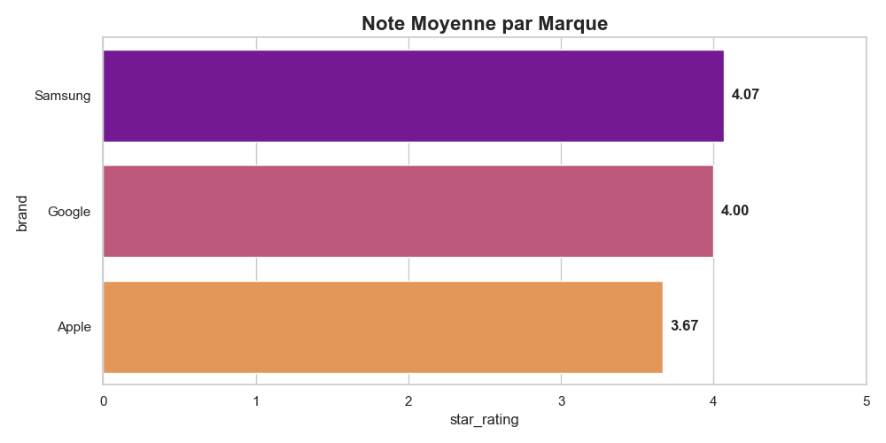
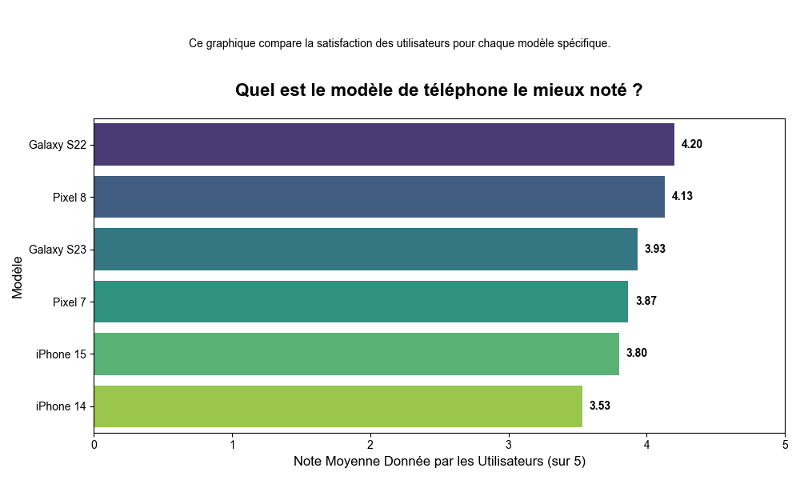
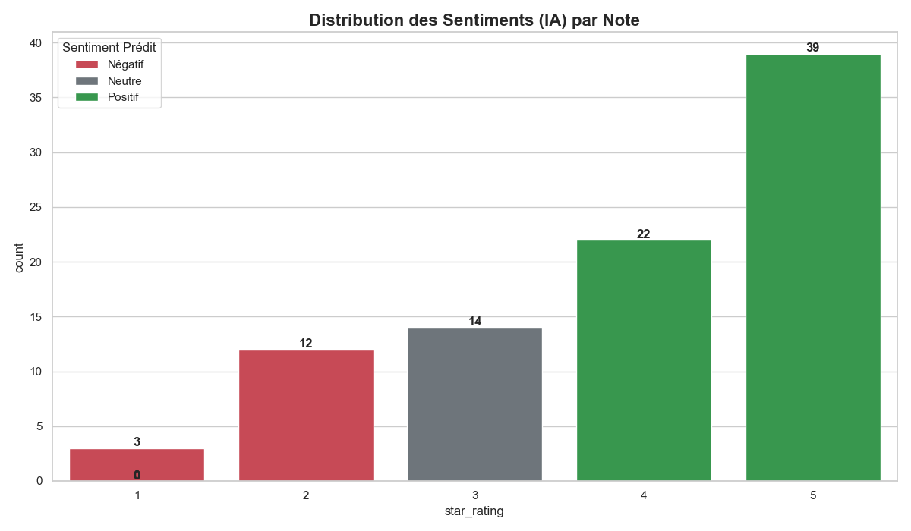
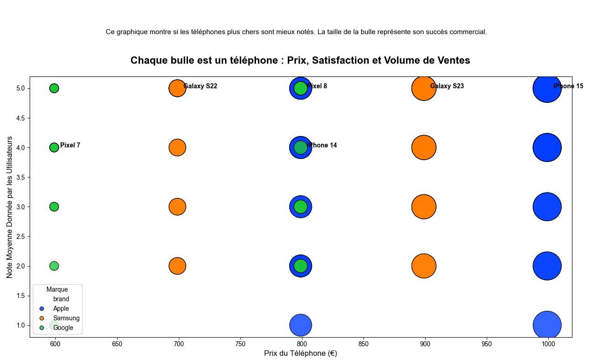

À Propos de ce Dashboard
Ce tableau de bord interactif a pour but de simplifier le choix d'un smartphone. Il synthétise des avis utilisateurs en utilisant un modèle d'Intelligence Artificielle (Machine Learning) pour analyser le sentiment réel derrière chaque commentaire.
Avantages
- ✅ Analyse Sémantique Avancée : Le modèle ne se contente pas de compter les mots, il comprend leur sens et le contexte global de la phrase pour une analyse plus fine et humaine.
- ✅ Synthèse rapide : Comprenez les forces et faiblesses d'un produit en un clin d'œil.
- ✅ Visuel et Intuitif : Des graphiques clairs valent mieux que de longs discours.
Limites
- ⚠️ Taille de l'échantillon : Cette démo est basée sur un jeu de données limité (90 avis). Un modèle entraîné sur des milliers de textes serait encore plus performant.
- ⚠️ Généralisation : Le modèle est performant sur ces données mais devrait être ré-entraîné pour analyser des avis sur d'autres types de produits.
Statistiques des Données
Source : Kaggle Dataset
Langue des avis : Anglais
--
Avis analysés
--
Avis Apple
--
Avis Samsung
--
Avis Google
Analyses Globales



